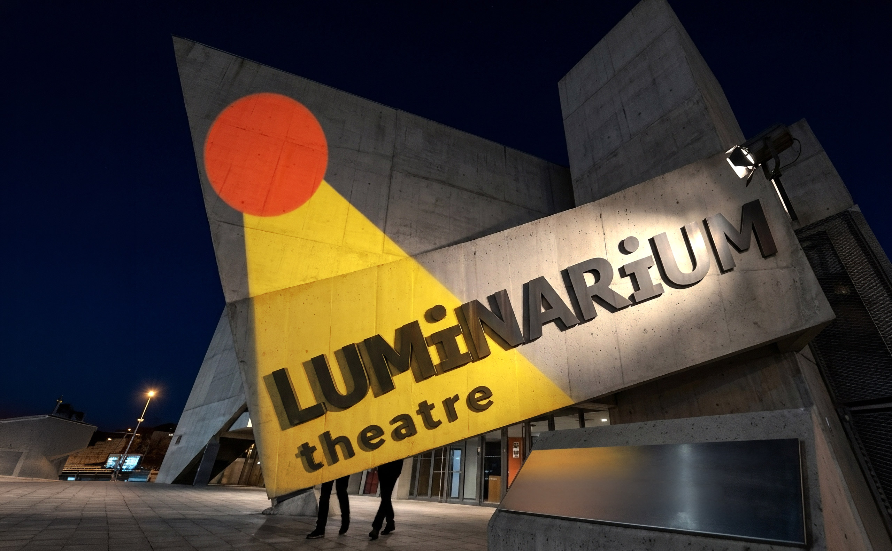
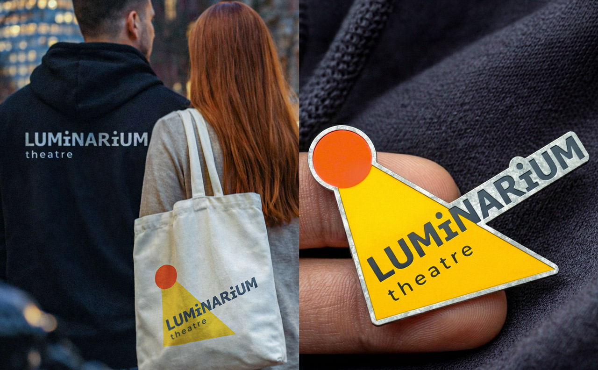

Luminarium Theatre
It started with a name.
Theatre identities often begin in the same place: masks, curtains, dramatic gestures, lettering that tries a little too hard to look cultured.
Luminarium didn’t need any of that.
It is a new theatre and acting school in Vancouver, created by people with serious stage experience and a clear need for a visual language that could live in more than one world: performance and education, adults and children, English and Russian, theatre tradition and contemporary culture.
The name gave the project its structure.
Luminarium suggests light, but not in a decorative way. It suggests a place where light is held, shaped, and directed. That became the useful idea.



The primary mark is typographic: quiet, stable, and deliberately plain. It doesn’t try to perform. That is its job.
The emblem does something different. A circle and a beam shift the word into motion. It becomes a small stage event: light enters, the word changes, attention appears.
The system is simple because the theatre will not be. It needs room for posters, performances, classes, streams, and whatever the company becomes next.
The identity doesn’t explain theatre. It gives Luminarium a way to appear without falling into the old signs.